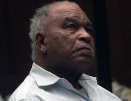

American Serial Killer
Alias: Samuel McDowell,
Choke and Stroke Killer
Samuel Little
Born: Reynolds, Georgia, USA
Victims: 50 confirmed, 93 confessed
Status: Died on 30 December 2020
The FBI have described Samuel Little to be “the most prolific serial killer in U.S. history” (FBI, 2020) with a total confession to 93 murders over a 35-year period from 1970 – 2005. Whilst Little has confessed the 93 murders, the FBI have only verified 50 of those confessions however do believe all his confession are credible (FBI, 2020). The vast majority of Samuel Little’s victims were marked as accidental deaths, overdoses, or death from undetermined causes. Little himself described the women he picked as “women whose eyes were half-dead already” and “had been waiting for him to finish the job” (Lauren, 2018). Due to the vast majority of these women coming from low socioeconomic status, and a high percentage of the women being African American, their disappearances were often overlooked or did not receive the same news coverage of murders regarding wealthy white women (Lauren, 2018). This resulted in the FBI’s request for assistance from the general populace in connecting the drawings Little drew, and the detailed interviews of Little to the victims. These interviews contained information on the murder, the description of the victim including an approximated weight and height from Little himself, the events that followed to the murder and the location the murder took place. The FBI disclosed information regarding the potential murders on their website with a total of 48 victims they initially requested assistance in finding, now 40 (FBI, 2020). Little died in his cell at the age of 80, leaving any further memories of potential victims behind (NPR, 2020).